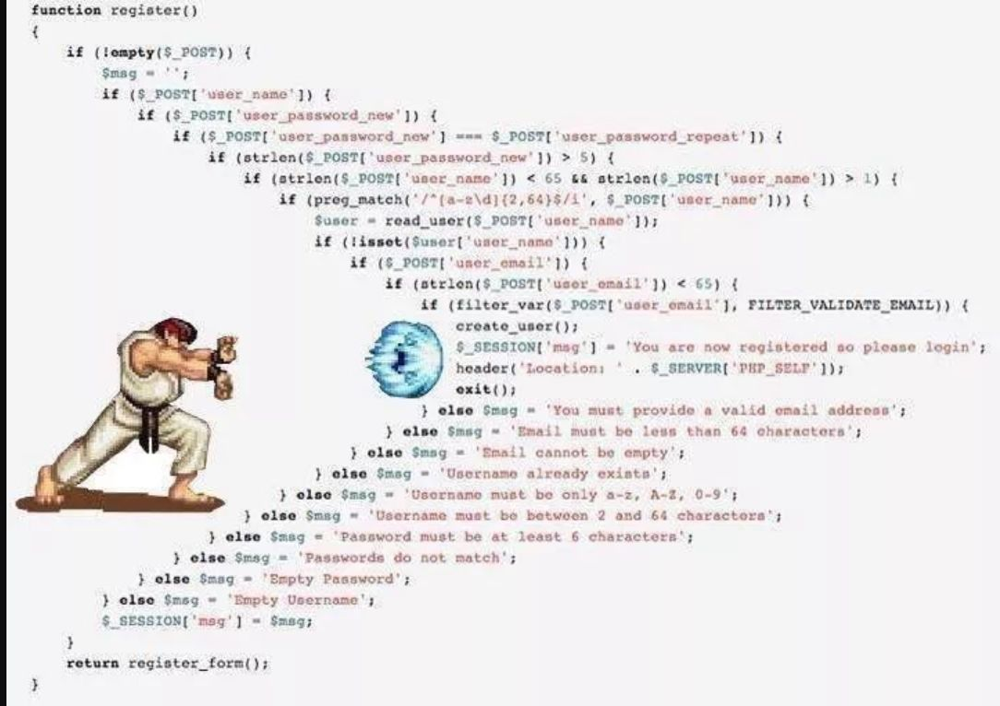

代码中的if…else杂谈1
if-else过多的部分问题分析。
问题

很多编码规范/设计模式/重构方面的书、很多公司的编码规范都提到过if-else嵌套过深/if-else过多这些个“坏味道”，公司的或从学校出来的”屎山代码”或多或少有这些味道，形如：
问题1
1 | |
这种类型的if-else应该是最应该避免的，因为这么写的问题最多：
- 维护困难：当嵌套层数太深后，想搞明白整段代码相当困难；
- 单元测试困难：需要的测试用例太多，很难覆盖所有情况；
- 误导“后浪”：坏的习惯会传染人，特别是当新人维护这段代码时很容易就把这种不好的习惯学走；就算是老人维护，在时间紧张或怕无法理清楚整体逻辑时，只能继续嵌套更多if-else，让代码“莫名其妙的”正确运行起来。
- 影响预读和cache命中：两年前面试时被问到了这个问题，当时只提到了前面几点，后来才想起来面试官最想要这个答案，愧对我的导师兼《微机原理》课老师。CPU都是多级流水线架构运行，如果分支预测成功，很多指令都提前进入流水线流程中，则流水线中指令运行的非常顺畅，而如果分支预测失败，则需要清空流水线中的那些预测出来的指令，重新加载正确的指令到流水线中执行，然而现代CPU的流水线级数非常长，分支预测失败会损失10-20个左右的时钟周期，因此对于复杂的流水线，好的分支预测方法非常重要。（引自if-else的效率有多低你知道吗？-电子发烧友网 (elecfans.com);
又如：
问题2
1 | |
- 个人感觉这种链式的if-else可以接受；
- 但是这种写法经常会伴随着大量的复制-粘贴，这就有“坏味道”了。
switch-case也有同样的问题。
更有甚者：
问题3
1 | |
学校出来的代码不少这么写的，丝毫没有夸张成分。这已经不仅仅是if-else多的问题了，还有个滥用标志位的问题：
- 标志位不初始化；
RadioButton的按下状态需要标志位记录；vector::empty()是否为true需要标志位记录；ComboBox是否选择第一行需要标志位记录；- ……
类大、函数长
（假如我的一个函数能实现5个功能，一个类有50个这种函数，那么我这个类就可以实现250个功能， 我真是个小机灵鬼(¬､¬)）
标志位多、if-else一长串，维护起来相当困难。
总结
个人感觉if-else既不是洪水猛兽，也不能放任发展。不能要求每个人都会设计模式，况且大佬们对是否应该使用设计模式都意见不一。日常编码中注意最常见的问题即可，没必要反if-else反到“洁癖”。。
参考
本博客所有文章除特别声明外，均采用 CC BY-SA 4.0 协议 ，转载请注明出处！